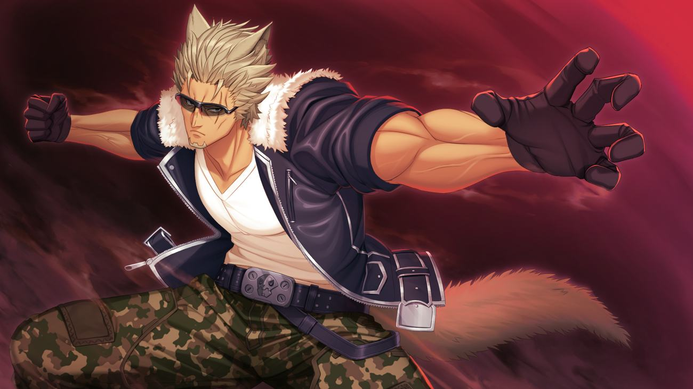

Ras · Anima

Anima (Half-Beast) diberkahi kemampuan fisik luar biasa, membuatnya selalu unggul dalam hal raw power — namun bukan berarti ras yang satu ini lemah dalam permainan otak.
Sophia Noscova, pemegang wewenang tertinggi badan intelejensi di Frost Neutral Territory, pandai menyusun rencana — musuh external maupun internal, politik maupun militer, gk mau main main dengannya.